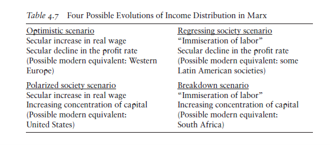

7 Inequality
Roberts on MIlanovic Vision of Inequalty
Visions of Inequality takes a different approach from the stats. Milanovic identifies those authors that he considers have the most important explanations of why inequality of wealth and income is so great between humans. As Milanovic puts it: “The objective of this book is to trace the evolution of thinking about economic inequality over the past two centuries, based on the works of some influential economists whose writings can be interpreted to deal, directly or indirectly, with income distribution and income inequality. They are François Quesnay, Adam Smith, David Ricardo, Karl Marx, Vilfredo Pareto, Simon Kuznets, and a group of economists from the second half of the twentieth century (the latter collectively influential even as they individually lack the iconic status of the prior six).” The latter includes Thomas Piketty.
It is not possible to go through all the ‘visions’ of inequality described by Milanovic, so unsurprisingly, I shall concentrate on Milanovic’s analysis of Marx on inequality. Milanovic reckons that Marx’s “theory of value can be treated entirely distinctly (that is, left out) from the discussion of forces that, according to Marx, affect income distribution between classes.” That is an interesting observation that I am not sure is correct – as I shall attempt to explain below.
Milanovic goes on that “it should be noted that Marx was generally uninterested in questions of inequality in the way that we pose them now. His view, shared by most Marxists, was that unless the background institutions of capitalism—namely, private ownership of means of production and hired labor— were swept away, any political struggles to reduce inequality could at best lead to reformism, trade unionism, and what Lenin later called “opportunism.” Inequality was thus a derivative, secondary issue, barely addressed in Marx’s writings.”
Again, I am not sure that it is correct that Marx was not interested in inequality, although Milanovic correctly identifies that Marx saw inequality and poverty under capitalism as the result of the private ownership of the means of production and the exploitation of labour power, not due to regressive taxation, low wages or monopoly, as such. Milanovic points out that “descriptions of poverty and inequality fill the pages of Capital, especially its first volume. But they are there to show the reality of capitalist society and the need to end the system of wage-labor. They are not there to advocate reductions of inequality and poverty within the existing system.”
Milanovic makes the currently usual view that Marx’s view of capitalism and thus inequality was ‘unfinished’. He accepts that “some important parts (like the discussion of the tendency of the profit rate to fall) are clearly unfinished.” For Milanovic, Marx wrote in a chaotic way, but even so there were “true diamonds in the rough”. And Marx was no dry theorist. Despite the dearth of empirical data in the mid-19th century, he diligently tried to dig up evidence to back his vision of capitalism. “Marx’s use of data and facts marked a dramatic improvement upon Ricardo and Smith. Pareto would take this to a new level because of his access to the fiscal data on income distribution. …Marx, too, cited fiscal data on English and Irish income distributions—the same type of data that three decades later would provide the empirical core of Pareto’s claims.”
Marx noted that there was “simultaneously an increase in the real wage and a declining labor share.” This, I will argue below, is key to Marx’s view on inequality.
Marx considered that any distribution of the means of consumption was only a consequence of the distribution of the conditions of production. And the latter was a feature of the mode of production.
The capitalist mode of production rests on the fact that the material conditions of production are in the hands of non-workers in the form of property in capital and land, while the masses are only owners of their personal condition of production, of labor power. Thus, the distribution of income and wealth cannot be changed in any material way until the system is changed. The issue is the abolition of classes, not marginal alteration of income inequality. “To clamor for equal or even equitable remuneration on the basis of the wages system,” Marx writes, “is the same as to clamor for freedom on the basis of the slavery system.”
his is where I find it strange for Milanovic to claim (as above) that Marx’s theory of value has no connection to his explanation of inequality. Indeed, Milanovic says that Marx’s theory of exploitation is of commodity “exchange that is based fully on the law of value: the workers are not treated unfairly, nor are they paid less than the value of their labor-power. Exploitation comes from this specific feature of labor: its ability to produce value greater than the value of goods and services expended in that effort and therefore necessary to compensate it. From the theory of exploitation comes also the conclusion that profit is the surplus value in another guise.”
From Marx’s value theory, we can derive a theory of classes in capitalist society. Also, what flows from Marx’s value theory is that wage differences among countries are generated by the rise in the technical composition of capital and productivity differentials.
Marx argues that the very concept of what is the minimal acceptable wage is historical; “indeed, it would be hard to imagine Marx, for whom all economic categories are historical, not applying the same logic to labor-power.” (Milanovic). As Marx says in volume III of Capital: “The actual value of labour-power diverges from the physical minimum; it differs according to climate and the level of social development; it depends not only on the physical needs but also on historically-developed social needs.” I think this observation is important in the debate about whether the exploitation of the Global South by the rich imperialist bloc is mainly due to very low wages in the former rather than mainly due to the productive power of the imperialist bloc to grab the lion’s share of profit through international trade and investment.
On inequality, Milanovic refers to Marx’s view that it is a relative concept. And on needs, Marx explains: “Our wants and pleasures have their origin in society; we therefore measure them in relation to society; we do not measure them in relation to the objects which serve for their gratification. Since they are of a social nature, they are of a relative nature.”
Falling profit rate
Milanovic takes us through Marx’s law of the tendency of the rate of profit to fall in a broadly accurate manner. However, he accepts the distortion of that law propounded by Michael Heinrich and others that the law is ‘indeterminate’. “Heinrich is right to state that the increase in s / v is not a force that counteracts the law”. But Milanovic ‘saves’ the law with various arguments that a rising rate of surplus value will not sufficiently counteract a rising organic composition of capital and “We are thus back to Marx’s original, and crucial, contention that the profit rate will decline with greater capital intensity of production unless the effect of that change is offset by greater exploitation of labor.“
Milanovic picks up a point that many Marxists miss about the law, namely that it is both the explanation of regular and recurring cycles of crises (booms and slumps) and also a secular law indicating the ultimate failure of capitalist production to develop the productive forces for humanity. “It is the joint or rather simultaneous action of the two—the coincidence of the secular low profits and economic crises—that will spell the end of capitalism.”
Milanovic goes into a detailed account of the counteracting forces that deter or slow the fall in the rate profit to be found in Volume 3 of Capital chapter 14. Then he reaches this conclusion. “The tendency of the profit rate to fall must reduce inequality because capitalists (together with landlords who are treated just as a subgroup of capitalists) are the richest class. Clearly, if the top class’s incomes do not rise, or even decline, we may expect an improvement in distribution. This may be true even if there is an increased concentration of capitalists’ incomes and some capitalists become very rich while others go bankrupt and join workers.”
And he presents us with four possible income distributions from Marx’s law of profitability.

These are based on his assertion that a falling rate of profit will mean reduced inequality because real wages rise. But this does not work for me. I think it confuses the rate of surplus value with the rate of profit. Milanovic’s four possibilities arise from his acceptance that Marx’s law is indeterminate and that it is the rate of profit that decides changes in inequality, not the rate of exploitation. Inequality can rise when the rate of profit is falling because the rate of surplus value and the mass of profit are rising. A rising s/v can mean more s for an ever smaller group of capitalists and a rising v for an ever greater group of workers.
Since 2000, the rate of profit has stagnated or fallen but inequality continued to rise along with a rising rate of surplus value.
Milanovic also claims that the development of ‘homoploutia’, the supposed trend among the richest income groups to be both labor-income and capital-income rich “by receiving high wages in return for their high-skill labor as well as profits from their ownership of assets” weakens Marx’s theory of exploitation. I don’t think so, particularly as there is strong evidence that the top earners still get their income from capital rather than wages.
The idea that a rising rate of profit is necessary to increase inequality is not Marx’s, but that of Thomas Piketty, in his acclaimed book, Capital in the 21st century. Indeed, as Milanovic contrasts Piketty’s theory of inequality with that of Marx. “Piketty has thus proposed an entirely new and compelling argument that peaceful development of capitalism leads to the breakdown of the system—not because the profit rate crashes to zero and capitalists give up investing (as Marx would have it), but for the very opposite reason that capitalists tend to end up in possession of a society’s entire output and that is a socially unsustainable situation. In Marx’s view, capitalists (as a class) fail because they are not too successful; in Piketty’s view, they fail because they are too successful.”
To sum up, Milanovic says that “we have on offer three theories of income distribution in capitalism. First, there is Marx’s theory, by which increasing concentration of ownership of capital and decreasing rate of profit ultimately lead to the death of capitalism through zero investments. Second, we have Kuznets’s hypothesis of a wave of rising and then decreasing inequality— or as I have argued, successive waves. And third, now, there is Piketty’s theory of unfettered capitalism that, left to its own devices, maintains an unchanged rate of return and sees the top earners’ share of capital income increasing to the point that it threatens to swallow the entire output of the society, and only a political response can prevent such an outcome.”
Given Marx’s compelling explanation of inequality of income and wealth derived from his theory of value and exploitation, Milanovic asks “why do we tend to ignore his views on equality? The answer, I suspect, is that after the cataclysmic failures of socialism and ideological ascendance of neoliberal ideology, we have tacitly accepted the permanence of capitalism. If one has such a view, then indeed it makes sense to refashion Marx as a pro-equality thinker who cared about trade union activity, equal opportunity, higher workers’ wages and the like. In other words, if we have given up on the idea of ending capitalism, we can try to repurpose Marx into the apostle of equality under capitalism. But it may not be easy. After all, if the Left tosses out the idea of transcending capitalism, can it be said to be Left-wing at all?”
Indeed. But I would remind the reader of what Milanovic concluded in another book of his, Capitalism Alone. “Capitalism gets much wrong, but also much right—and it is not going anywhere. Our task is to improve it.” Milanovic does not like capitalism and its inequalities, but to use Margaret Thatcher’s phrase in referring to her neoliberal policies for capitalism: he reckons there is no alternative (TINA). So the aim must be, just as Keynes argued in the 1930s: “to make capitalism more sustainable. And that’s exactly what I think we should do now”.
That’s not Marx’s vision of inequality and how to end it. I put it this way in another paper: “Policies aimed at reducing inequality of income by taxation and regulation, or even by boosting workers’ wages, will not achieve much impact while there is such a high level of inequality of wealth. And when that inequality of wealth stems from the concentration of the means of production and finance in the hands of a few.“